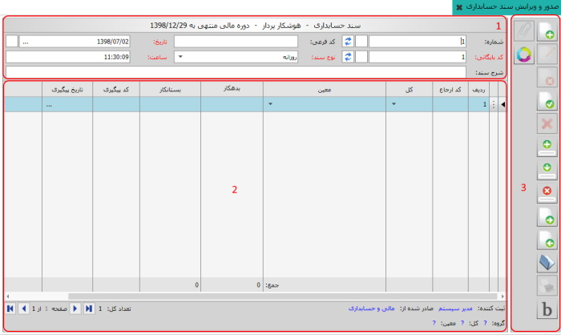
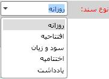
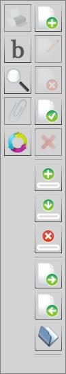
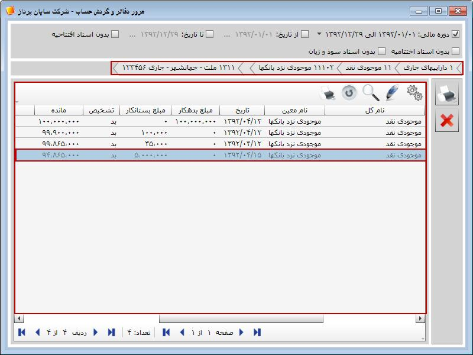
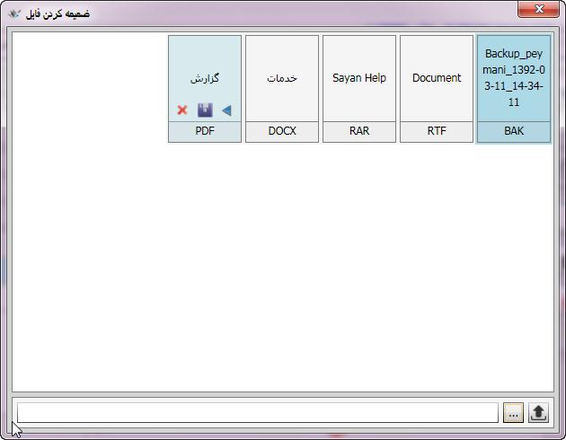

ایجاد سند جدید (F8)
ایجاد سند جدید (F8)
برای صدور اسناد حسابداری خود در سیستم و یا ویرایش آنها باید از منوی نرم افزار روی «صدور و ویرایش سند حسابداری» کلیک کنید تا شکل زیر ظاهر شود.
شکل بالا مربوط به صفحه صدور و ویرایش سند حسابداری است، از این صفحه می توانید اسناد حسابداری خود را صادر کنید و یا اسناد حسابداری که قبلا ایجاد کرده اید را باز کرده و عملیات مختلفی روی آنها انجام دهید.
در ادامه تک تک قسمت های مختلف شکل بالا را توضیح می دهیم و در پایان یک نمونه سند حسابداری ثبت می کنیم.

شکل بالا سر برگ فرم صدور سند می باشد که اجزای مختلف آن توضیح داده می شود:
در مرکز این سربرگ نام سند، نام واحد اقتصادی و دوره مالی را مشاهده می کنید.
شماره: شماره سند در این قسمت توسط سیستم پیشنهاد می شود و شما می توانید شماره سند را به دلخواه تغییر دهید.
کد بایگانی: سیستم از این قسمت ترتیب بایگانی کردن اسناد حسابداری را مشخص می کند.(کد بایگانی قابل تغییر نمی باشد).
کد فرعی: از این قسمت می توانید در صورت نیاز برای اسناد حسابداری کد فرعی اختصاص دهید.
شرح سند: می توانید شرح سندی را که می خواهید صادر کنید در این قسمت وارد کنید.
تاریخ: تاریخ روزی را که سند حسابداری صادر می شود در این قسمت مشاهده می کنید. این تاریخ را سیستم به طور اتوماتیک به روز می کند با این حال می توان این تاریخ را تغییر داد.
ساعت: ساعت ثبت سند نیز در این قسمت توسط سیستم ثبت می شود، ساعت نیز مانند تاریخ قابل تغییر است.
نوع اسنادی که در حسابداری وجود دارد را از این قسمت می توانید انتخاب کنید.
روزانه: اسناد حسابداری که مربوط به رویدادهای مالی طی یک دوره مالی می باشند اسناد روزانه نامیده می شوند مانند اسناد مربوط به عملیات خرید و فروش، خزانه و ...
افتتاحیه: سند حسابداری که در ابتدای دوره مالی یا در ابتدای راه اندازی نرم افزار برای استقرار مانده حساب های دائم از جمله صندوق، بانک، اشخاص و ... صادر می شود سند افتتاحیه است.
سود و زیان: برای بستن حساب های موقت در پایان دوره مالی می توانید سند سود و زیان صادر نمایید.
اختتامیه: در پایان دوره مالی برای بستن کلیه حساب های دائم سند اختتامیه صادر می شود.
یادداشت: اگر بخواهید سند حسابداری را بدون تراز کردن ثبت کنید می توانید نوع سند را یادداشت انتخاب کنید.

در شکل فوق می توانید اطلاعات مربوط به سند حسابداری را وارد کنید، در حالت معمولی این قسمت دارای 9 ستون است، در این قسمت باید حساب کل و حساب معین متناسب با سندی را که می خواهید ثبت کنید انتخاب کنید، همچنین می توانید برای هر ردیف از سند شرح مناسب جداگانه ای را وارد کنید. چون حساب های معین مختلف با حساب های تفصیل متناسب با خود در ارتباط هستند پس از انتخاب حساب معین مورد نظر در فرم ثبت سند، متناسب با ارتباط آن معین با حساب های تفصیل مربوطه، ستون یا ستون هایی به فرم توسط سیستم اضافه می شود.
در شکل بالا از صفحه صدور و ویرایش سند حسابداری ابزارهایی جهت صدور یا ویرایش اسناد وجود دارند که توضیح هر یک در زیر آمده است:
ایجاد سند جدید (F8)
 باز کردن (F3):
لیست اسناد صادر شده را باز می کند و می توانید سند مورد نظر را انتخاب کنید و آن را مشاهده کنید.
باز کردن (F3):
لیست اسناد صادر شده را باز می کند و می توانید سند مورد نظر را انتخاب کنید و آن را مشاهده کنید.
 ویرایش (F2):
پس از باز کردن سند خاصی می توانید با این کلید سند مورد نظر را ویرایش کنید.
ویرایش (F2):
پس از باز کردن سند خاصی می توانید با این کلید سند مورد نظر را ویرایش کنید.
 چاپ (Ctrl+P): سندی که باز است را می توان به کمک این گزینه چاپ کرد.
چاپ (Ctrl+P): سندی که باز است را می توان به کمک این گزینه چاپ کرد.
 حذف سند (F9)
حذف سند (F9)
تراز کردن (Ctrl+B): با کلیک روی این گزینه سیستم سند حسابداری را تراز می کند.(تراز مقادیر بدهکار و بستانکار)
 ثبت سند (Ctrl+Enter) :
به کمک این گزینه بعد از تکمیل سند می توانید آن را ثبت کنید.
ثبت سند (Ctrl+Enter) :
به کمک این گزینه بعد از تکمیل سند می توانید آن را ثبت کنید.
 مشاهده گردش (Ctrl+F6):
در فرم صدور سند حسابداری وقتی ردیفی را انتخاب می کنید که شامل حساب کل و حساب معین خاصی است با کلیک روی این گزینه می توانید گردش حساب کل و معین آن ردیف را مشاهده کنید.(در صدور سند مثال صفحه ای که با کلیک روی این گزینه ظاهر می شود را مشاهده خواهید کرد).
مشاهده گردش (Ctrl+F6):
در فرم صدور سند حسابداری وقتی ردیفی را انتخاب می کنید که شامل حساب کل و حساب معین خاصی است با کلیک روی این گزینه می توانید گردش حساب کل و معین آن ردیف را مشاهده کنید.(در صدور سند مثال صفحه ای که با کلیک روی این گزینه ظاهر می شود را مشاهده خواهید کرد).
 بررسی نگارش:
با زدن این گزینه سیستم قسمت های الزامی سند حسابداری را که باید تکمیل شوند اما تکمیل نشده اند را مشخص می کند.
بررسی نگارش:
با زدن این گزینه سیستم قسمت های الزامی سند حسابداری را که باید تکمیل شوند اما تکمیل نشده اند را مشخص می کند.
 ایجاد ردیف (Ctrl+Plus):
در هنگام صدور سند برای ایجاد ردیف جدید روی این گزینه کلیک کنید.
ایجاد ردیف (Ctrl+Plus):
در هنگام صدور سند برای ایجاد ردیف جدید روی این گزینه کلیک کنید.
 کپی ردیف (Ctrl+Shift+Plus):
به کمک این گزینه می توانید اطلاعات یک ردیف را در ردیف دیگر کپی کنید.
کپی ردیف (Ctrl+Shift+Plus):
به کمک این گزینه می توانید اطلاعات یک ردیف را در ردیف دیگر کپی کنید.
 حذف ردیف (Ctrl+Minus)
حذف ردیف (Ctrl+Minus)
 ضمیمه کردن فایل ها:
گاهی لازم است فایل ها یا مستندات مرتبط با سند ثبت شده همراه با آن بایگانی شود. با استفاده از این گزینه که بعد از ثبت سند فعال می شود می توانید انواع فایل های مربوط به سند مورد نظرتان را به آن ضمیمه کنید.
ضمیمه کردن فایل ها:
گاهی لازم است فایل ها یا مستندات مرتبط با سند ثبت شده همراه با آن بایگانی شود. با استفاده از این گزینه که بعد از ثبت سند فعال می شود می توانید انواع فایل های مربوط به سند مورد نظرتان را به آن ضمیمه کنید.
 انتخاب دوره مالی (F10):
به کمک این گزینه می توانید از بین دوره هایی مالی ایجاد شده دوره ی مورد نظر را انتخاب کنید.
انتخاب دوره مالی (F10):
به کمک این گزینه می توانید از بین دوره هایی مالی ایجاد شده دوره ی مورد نظر را انتخاب کنید.
 مشاهده سند بعدی (F12)
مشاهده سند بعدی (F12)
 مشاهده سند قبلی (F11)
مشاهده سند قبلی (F11)
 انصراف (Ctrl+F2):
اگر پس از ثبت سند بخواهید آن را ویرایش کنید برای انصراف از ویرایش می توانید از این گزینه استفاده نمایید.
انصراف (Ctrl+F2):
اگر پس از ثبت سند بخواهید آن را ویرایش کنید برای انصراف از ویرایش می توانید از این گزینه استفاده نمایید.
در پایان منوی صدور و ویرایش سند حسابداری به عنوان نمونه یک سند حسابداری ایجاد می کنیم اجزای مختلف این سند در تصاویر جداگانه مشخص است.(به شماره گذاری ها توجه کنید.)

1

2

3

4

5

در مورد شکل مشخص شده با عدد 5 این توضیح لازم است که حساب های بانکی، حساب تفصیلی است که با حساب معین شماره 4 ارتباط داده شده است (در منوی مدیریت لایه های حساب) لذا در این ردیف حساب بانکی مورد نظر انتخاب شده است اما چون برای معین شماره 2 حساب تفصیل حساب های بانکی ارتباط داده نشده است لذا برای این معین حساب بانکی تعریف نمی شود.
با انتخاب هر یک از ردیف های سند حسابداری، اطلاعات مربوط به آنها در پایین صفحه فرم صدور سند نمایش داده می شود. حال برای مشاهده گردش حساب های کل و معین هر یک از ردیف های سند می توانید آن ردیف را انتخاب کرده و روی کلید «مشاهده گردش» کلیک کنید.
با تکمیل ردیف های سند حسابداری مورد نظرتان روی گزینه «ثبت سند» کلیک کنید تا سند حسابداری ثبت شود. همان طور که قبلا گفته شد تعدادی از ابزارهای موجود در سمت راست فرم صدور سند پس از ثبت سند فعال می گردند، برای مثال کلیدهای ویرایش، چاپ و ضمیمه فایل ها. در صورتی که بخواهید فایل ها و مستندات مرتبط با یک سند را همراه آن بایگانی کنید می توانید پس از ثبت سند روی گزینه «ضمیمه کردن فایل ها» کلیک کنید تا پنجره مربوط به آن باز شود. برای ضمیمه کردن فایل ها مراحل را طبق شکل های زیر دنبال کنید.


در شکل قبل مشاهده می کنید که مسیر فایل انتخاب شده در پایین صفحه نمایش داده می شود، پس از زدن گزینه، فایل ضمیمه در صفحه به نمایش درخواهد آمد. به همین ترتیب می توانید انواع مختلف فایل را به تعداد دلخواه به سند مورد نظرتان ضمیمه کنید، با این کار صفحه ضمیمه به شکل زیر نمایش داده خواهد شد.
فایل های ضمیمه شده در قالب مشخصی شامل نام فایل و نوع آن نمایش داده می شوند. اگر نشانگر ماوس را روی هر یک از فایل ها قرار دهید، سه گزینه روی هر یک فعال می گردد که به شرح زیر می باشند:

برای اجرای فایل ضمیمه شده از گزینه «اجرا» استفاده کنید. با استفاده از گزینه «ذخیره» می توانید فایل ضمیمه را در محل مورد نظرتان ذخیره نمایید. برای حذف فایل انتخاب شده از لیست فایل های ضمیمه از گزینه «حذف» استفاده می شود.
 لازم است بدانید برای استفاده از گزینه «ضمیمه کردن فایل ها» باید ابتدا مسیر ضمیمه ها را در پنجره «مدیریت سرور» تعیین کنید که شرح کامل آن را می توانید در فایل «قابلیت های عمومی نرم افزار» مشاهده نمایید.
لازم است بدانید برای استفاده از گزینه «ضمیمه کردن فایل ها» باید ابتدا مسیر ضمیمه ها را در پنجره «مدیریت سرور» تعیین کنید که شرح کامل آن را می توانید در فایل «قابلیت های عمومی نرم افزار» مشاهده نمایید.